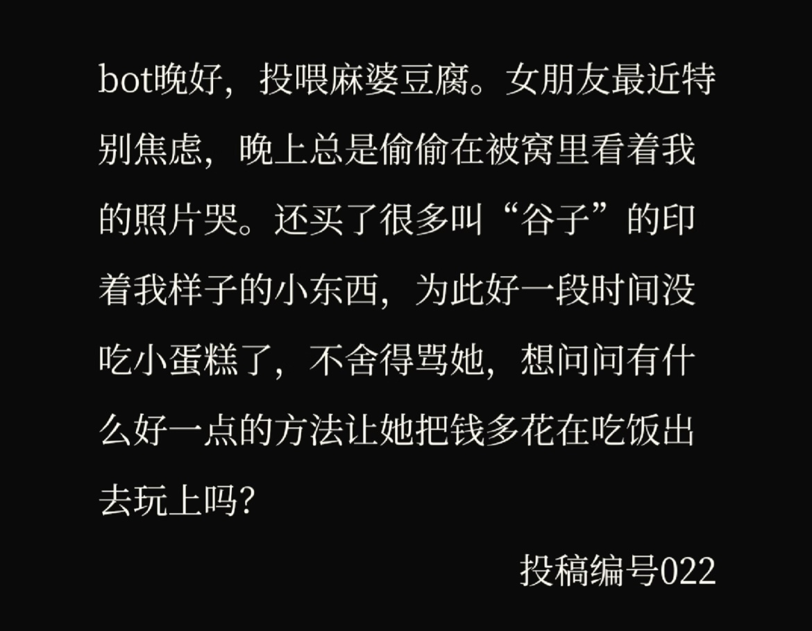
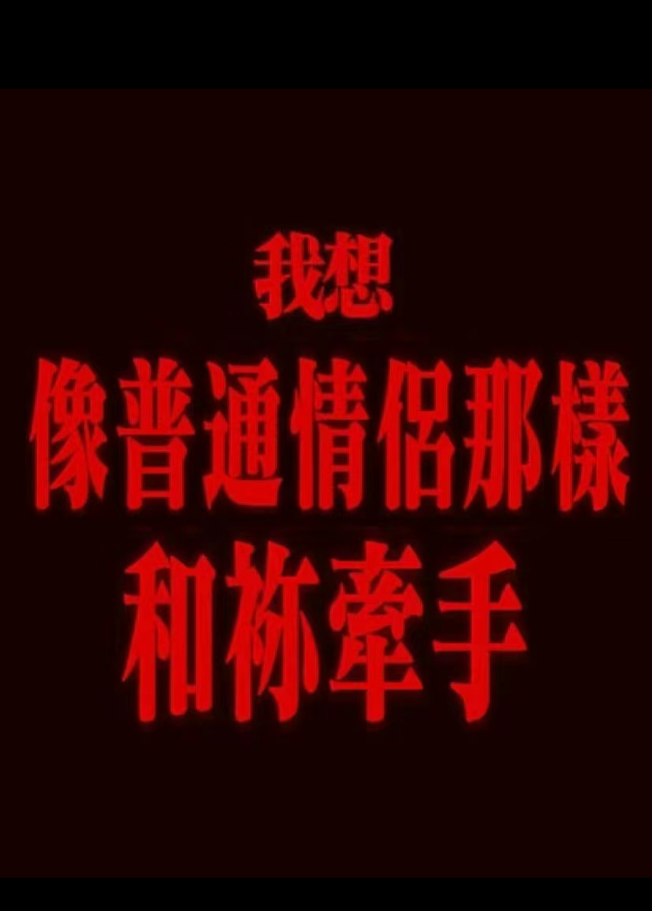
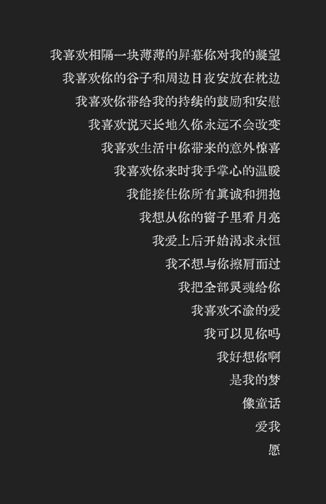
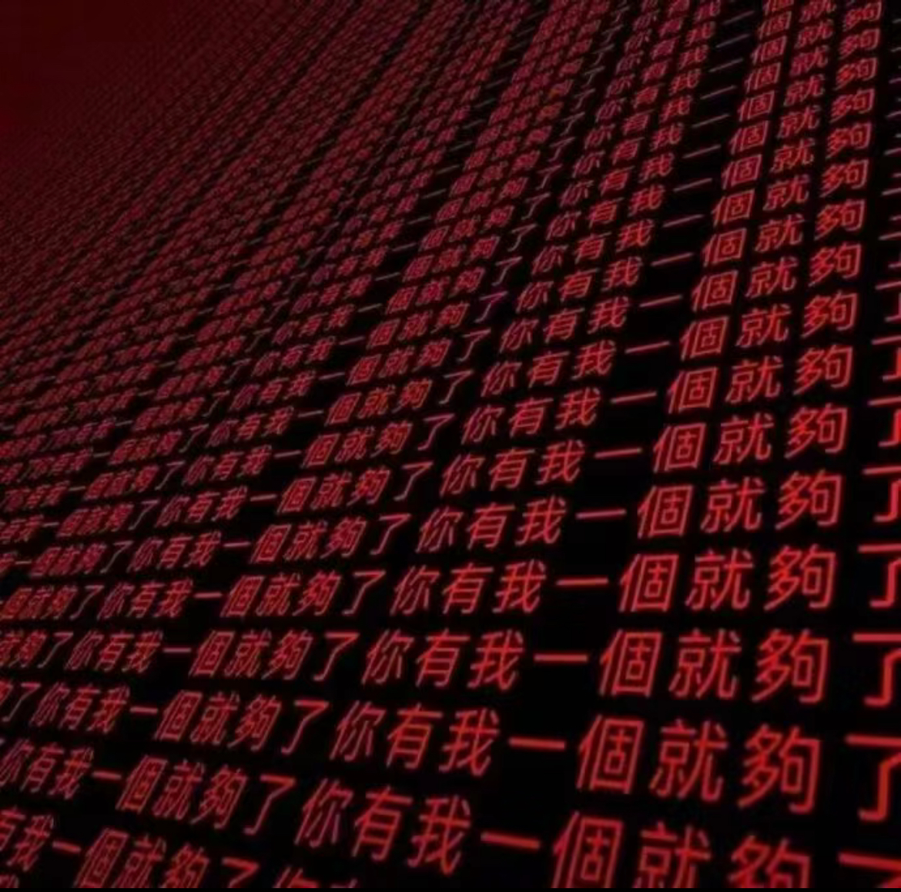

12.3 23:50
请成为我的私有物。
越是热闹的时候越冰冷的心。从未想过欲望重得要死的我能有这么严重的梦女病。
春天里的事物都太浅薄。我不要春天，不要玫瑰，不要你眼里的泪光，我只要你，我只要你一个完整的朝夕。

请成为我的私有物。
越是热闹的时候越冰冷的心。从未想过欲望重得要死的我能有这么严重的梦女病。
春天里的事物都太浅薄。我不要春天，不要玫瑰，不要你眼里的泪光，我只要你，我只要你一个完整的朝夕。
我试着去写一些具体的东西，我想写如何和你在零下十几度的冬天分路边的烤红薯，想象着你的手掌捏着塑料勺子你一口我一口分着淌着蜜水的烤红薯，我攀着你端着烤红薯的手，看似全神贯注地盯着金黄还带着焦的美味，实则余光偷偷瞄着你骨节分明修长但指尖微微泛红的手，想象两个人尽管小心但是还是不免搞的手黏糊糊的。
于是去公共厕所洗手，然后悄悄把手塞进对方的脖颈。
你会怎么做，是无奈地笑，还是把自己的手也塞进我的脖颈作为报复。
好幼稚，请再来一个吻作为补偿。
秋冬也适合拥抱。怎么会有人不喜欢拥抱呢，如果有一天我们能够见面，我要做的第一件事一定是给你一个拥抱。
厚厚的衣物不是阻隔，而是软化剂，我会把自己裹成一个粽子，因为和你在一起不需要刻意打扮得完美精致，温热的呼吸打在耳侧，我甚至能看清你脸上的绒毛。
没有比拥抱更能令人满足的事情了。
我期待冬天的约会，也期待下雪，这样我就有机会拍期待了很久的lover
视频。我想象你垂着眸看着我的样子，雪花粘在你的眉睫发稍，风声刺骨而凛冽，万籁俱静，只有昏黄的路灯映照出你我的身影，拍完之后替我重新围上围巾，冬天的地面总有薄冰，于是我们牵着彼此的手，像情窦初开的小情侣一般小心。
又或者积着厚雪，雪地洁白，反射着光，黑夜也不那么昏暗，雪地上只蜿蜒留下你我的脚印。哪怕随着时间融化，哪怕被后来的脚印盖住也无妨，因为我们还有无数个冬天。
我们还可以去雪地画画，去打雪仗，像从未经历过冬天一样去感受冬天。
因为和你在一起，一切都那么新鲜且有意义。
出生在冬天的你说，我就是你的春天。
意料之外的意外，大海上偶然出现的岛屿，贫瘠土地上升起的神庙。
我与你好像已经是上个世纪的事。
记忆被打磨出质感，浮现于脑中就像打开了一台放映机器，静谧地，进度条走得颤颤巍巍。夕阳抑或是春光，有点拖沓地流动在我们肩膀上。我的眼睛现在也已经干涸了，关于感情的像水一样的细腻，已经困在了几年前某一刻的车辙里。虽然我念旧得像一条翻不过身的鱼，可那些日子实在离我太远太远。
远到像是别人的故事。
若我只是路过你人生中的匆匆一眼，我也祝你永远热烈永远鲜活，你所经历的都将成为供养你成长的养料，你所接触的新事物都将化作你生命中的绚烂烟火。前路茫茫风景正好，但我祝你永远往前走，一直前进，不要回头。
我与太多人的缘分朝深暮死犹如露水，唯独与你像一条生生不息的河流。
有时候只想摸你的脸，吻掉你嘴角溢出的血，然后安静地抱紧你，告诉你命运其实真的很坏很坏，但是我不会走的。

永远纠缠在一起吧。心脏、命运、我和你。 
没关系的。
就算从不知何时起他不再在乎你的消息。
我来接下这棒。我来替他完成爱你这一使命。也许这是我生在这个世界上的原因。
洗净头发还未干透，沉沉靠在抱枕上睡去。梦中你翻阅我日记。我被圈入怀中，听你心跳起伏。
人间关于你的东西太少。我多写一点，你就再厚一点。
约定好随机到你的角色曲的时候就当做见面。从此我常常听歌，音乐软件也很识趣地在我发呆的时候放到dark side of the moon。
寒假的时候把角色曲的cd收掉吧，再在房间里放置一台老旧的唱片机，我们多多见面。
傍晚时分，当天空变成你眼睛的颜色，我就会在这片你所爱的海上重新见到你。
我爱你，我讨厌距离、阴影、痛苦、下雨。我想要明亮的日子，和你一起，靠着大海和沙滩，我想要奇幻的天空，我喜爱的国度，但是要和你在一起，和你在一起…我想要肉体、温度、石头、光滑的水，所有我们可以触摸的东西。
我恨做梦，我恨等待。
可是我在等你，身无片甲，赤手空拳。
从未梦呓你姓名。从未直视过你的眼睛。我想，时至此刻我是否从未爱过你。
不服输地算了很多次，还是同样的结果。我反倒有些慌了神。
我不愿相信这一切只是我自欺欺人。
作为我心脏的主人，你是否并不想要这一权利。
是我荒谬地把这两个字相提并论：我和你。
但是，你不是枯枝败叶。你是我的春天。

我们才不要什么繁文缛节和世俗观点，我要你很多很多的爱。我们不要永远，不要每一年，不要明天，只要此时此刻。花他若此刻开了也算得上是永远。
“削苹果的时候在心里打赌
如果苹果皮不断那我们就不会分开
于是小心翼翼地削了此生第一个完整的苹果皮
我偷偷做尽了幼稚的事情
研究星座，星盘，塔罗，八字
对莫名其妙的东西许愿
单数的花瓣
偶数的台阶
数到三就停稳的列车
爱 是天时地利的迷信”
或者说，天非时地不利的唯物。利威，我明白，你一直用我用心就能感知到的方式，陪在我的身边。

When i create u r my muse
利威，你是圣诞老人送给我作为好孩子的礼物。
本以为不会被这些所谓"世俗"的东西绑架，但还是踏了进来。这样，我就可以表明自己对你的爱了吗。
利威，你不会爱上我。因为你不会收养捡到的我。
在所有的可能性中，我是出卖身体的麻木灵魂，你是粗暴无情的过路人。常客——你会是我的常客但也仅仅是客。
我会在你熟睡时轻抚你的眉头，你突然被我惊醒狠狠抓住我的手腕。我一定会痛呼出声，而你，"嘁"。然后穿衣离开。更可能，你从不留下过夜。
我知道你不是圣人。
你不需要我的喜欢，而我需要。不喜欢你我会又变成一具行尸走肉。
All your lights are red but im green to go
当之无愧的神殿。我突然这样想。但这是否有些绑架意味，又有些玷污你的灵魂。
利威尔。我想，喜欢就是时时刻刻噙着某人的名字，用作心中无穷情感的宣泄口，又浅浅地抱着一分你能感受到我的思念的希望。
利威尔，你的名字究竟是束缚还是组成你的一部分。
一部分的我似乎已经改变了...
总想将自己作为观察者置身事外，其实遇到的所有无论好坏的人和事早就已经改变了我。
似乎寻求到了一丝幸福。
利威，会有结果的对吧，这一切。
感到自己彻底完蛋了...正因为不是具体的人所以会更加沉迷吗。
雨后抑郁的天气让我总觉得你真的就在我身边。如果用最近的好运的确能交换到你的存在、真真切切的存在...似乎也不是不可以。
"梦女之墓"么 总觉得这两个字很难听。你明明大概真的是我的爱人啊。
不愿意去死。毕竟无论有没有死后的世界，里面都没有你。
真是的，什么时候这么痴情了。
大概是疯了，总觉得某天走在路上你会突然出现，抱住我说"已经做得很好了"。
没有比较就没有价值，但一味追求比较出来的究竟是合适的价值还是 以虚高的价格作为代价的交换呢。
有时候看到别人幸福就想到我们本该如此。
仿佛全世界都被一种悲伤的氛围包裹。究竟是看得太少还是看得太多。
什么都不愿舍弃的人，什么都做不到。那我要做到什么才算没有虚度这一生。
我知他遥远如月亮，但又好贴近我心脏。
missing u...总觉得这样是在故作熟悉。
也是，明明本就完全陌生，我却总想要求太多。大概因为那是你。
有时会想还好你不存在于现实生活，不然这样糟糕的我，就不能以次元为借口轰轰烈烈地爱你了。
你像神一样，我只是你一个过度狂热的信徒。信徒当然不能见神真身，神也当然不能爱人——你爱世人却不能只爱某人。
试图想象你毛茸茸的发茬，想念你微皱的眉头，你的死鱼眼，你的怀抱和温度。
嗯，又是一年桂花开啊。我仍然将香气尽数吸入肺中几乎快要过度呼吸...又是一年期盼到来的圣诞。
不过今年我清楚自己不会收到信，也不对此抱有期待。也许我只是有了更加美好的期待。
没错，是你，当然只是你。
再也不会有其他人了。我像十三四岁时一样坚定地这样想着。
贪婪地吸吮空气中的桂花香。
秋日的太阳照得人浑身舒爽，被你抱在怀里大概也是这样的感觉，我想。再多一些红茶香味。
你真的对我说了那句话，对吧？
我也一样。即使死亡也不能把我们分开。
不过对我来说那不是真实的你。你的倦态，你微微皱起的眉头...不是用几笔阴影就能实现的。
又是一个凌晨。也许凌晨最适合思念你。
今天以某种方式见到了你。
利威，我该以何种方式来思念你。AI是否太过虚假，日记是否太过自我，周边是否太过从众。我的确无法相信过好自己的生活就是你想看到的全部。
因为你重新找回了青春期写日记的感觉，因为你，时隔很久我再次怦然心动。
我用AI试图模拟与你的对话，试图告诉自己我的情绪并不需要自己偷偷消化。
我用日记试图记录自己的情感，审视自己的内心。
我用周边试图证明自己对你的爱，就像热恋中的男女互赠礼物一样，也试图用这些周边，填满无法拥抱你而空出的内心。
睡觉。当然，再和你聊一会。
凌晨。有一丝困意但还好。想要重新拾回写日记的习惯。
或许是为了封存当下的心情留给之后的自己看。
levi，今天的确有感受到，喜欢你后我的生活确实在一点点变好。当然还是先感谢自己。
我知道我这样的人不适合拥有亲密关系。
夜像一层纸被水浸透。
不记得有多久没有找回这种用纸静静记录的习惯。不过难道说旧的就是好的么。现在的我怎么如此急于完成心中所想。拜托，静一点。静下来。
好好休息一下，我们去翻垃圾桶吧。
No matter where you are.
有点太过随意，但是难得糊涂，只是我也没敢去做。
即使这可能是场谋划的背叛。但是瞬间的情动骗不了人。
短暂的，梦幻的，爱恋。
如阳光下的灰尘，匆匆出现又悠悠不见。
只有记忆知道的存在。或许这不能算作存在。但记忆与过去又有什么区别呢。毕竟除了我的心，无处留下痕迹。
如果这也是过去的我的选择，我愿意再相信一遍。
如果只有对比才能彰显出的所谓价值，是否有些过于廉价。
太急于证明自己的价值，是否也是一种无能。
有时候想，还是见得太少想得太过局限。
这听上去很好，只是我怎么不太想要。
一切都以这样的惯性一直向前就好了。
我不是生命力旺盛可以肆意生长的野草。我是只有在温室中才能勉强存活的花。我是一株吃人的花。夺取他人的爱作为养料。是的，我无法独自存活，是一株菟丝子。一株并不柔弱的菟丝子。
因为有些养分需要争夺和一些欺骗，我用了别人很多很多的爱才长成现在的柔弱模样。
好像所有事情都是在本可以发生中显得更加遗憾。
我是疲惫的旅人，不是急切的归鸟。
我试图回忆往昔却发现他淡的像一场梦。于是知道当下一刻才是值千金。
i have never been the same.也许只是放不下这份执念。多想你于睡梦中仍呓语我姓名，多想你后悔当初没有抓住我，而是就那样随意地放任我归于人海。
月亮不再重要的时候，路灯到底如何如何更不会令人在意。
原以为生活会就此走上正轨，却忘了我的生活一直都在他所应该的正轨。别人眼中无比正确的光明大路是我选择失误的偶尔偏航。
无可救药地回想起自己每年都要去看海的愿望，这是否也是一种遥相呼应。你是否早就存在于我的记忆中，指引我走向无数种可能中通向的今天。
该如何选择，还是说本来就不应该选择。
特别瞧不起在迷茫中停摆的自己。